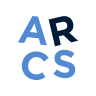
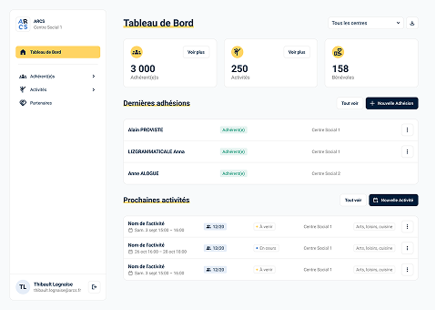
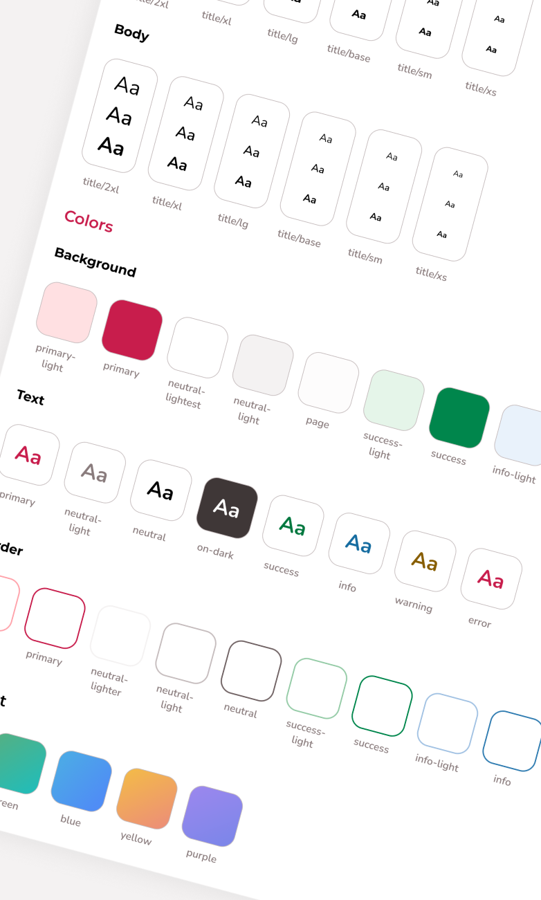
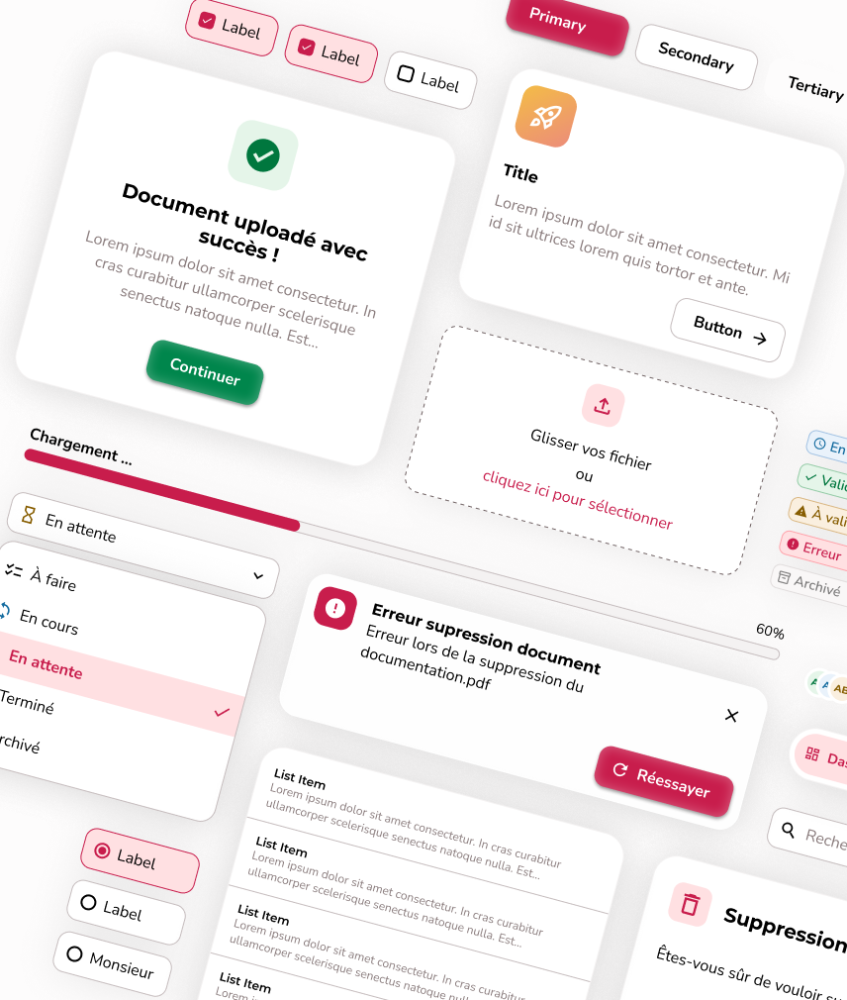
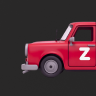
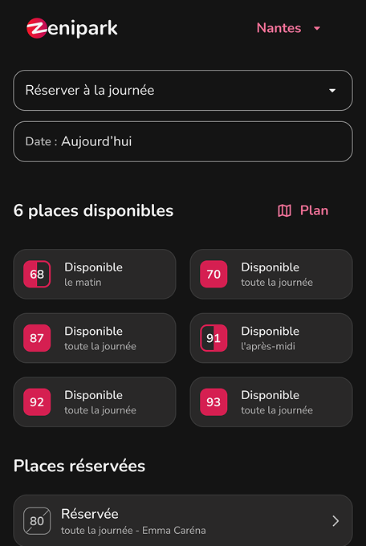
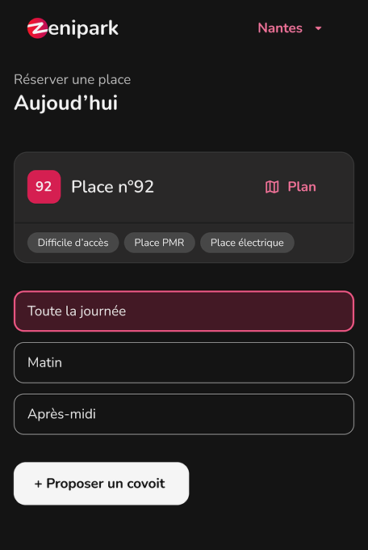

Thomas Gaubert
Je conçois et développe des interfaces produits
Ingénieur logiciel • 6 ans en frontend & UI/UX design

ARCS
Centraliser la gestion des adhésions et activités d'une association multi-centres


Conception d'un Design System pour unifier les apps internes d'une ESN

Zenipark

Audit ergonomique d’une web app de réservation de place de parking
Développeur frontend et concepteur UI/UX depuis 6 ans, j'ai construit un profil hybride entre code et design au fil de mes missions. D'abord sur le code, puis sur la conception UI/UX — jusqu'à porter la responsabilité design sur des projets entiers.
Ce qui me motive, c'est d'intervenir au-delà de l'exécution : cadrer les besoins, challenger les choix techniques, accompagner les équipes. Côté dev comme côté design.
Mon fil rouge : comprendre les besoins des utilisateurs·rices et concevoir des solutions adaptées.